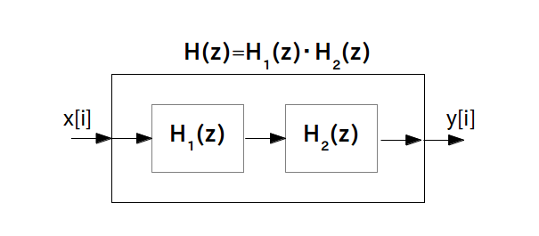
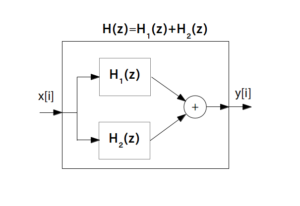
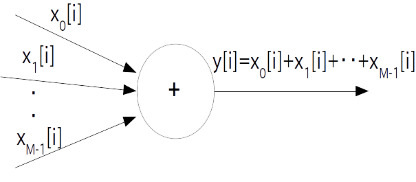
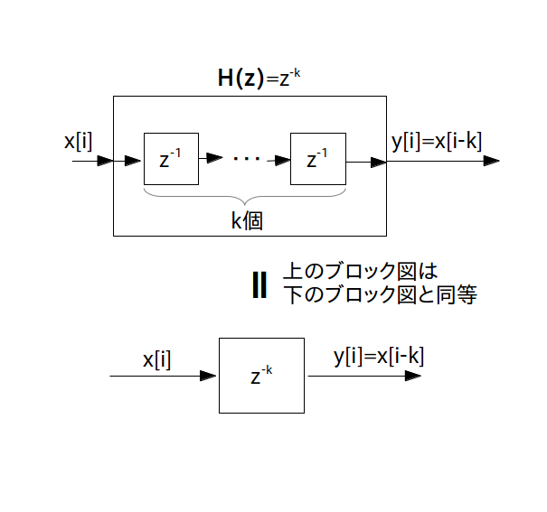

ブロック図:

プログラム表現:
y[i] = x[i-2]
前のページでフィルタの基本パーツの伝達関数・ブロック図・プログラミング表現を学びましたので、これらの基本パーツを組み合わせた複雑なフィルタの作り方を学んでいきます。
そのためにまず、2つ以上のフィルタを合成して作ったフィルタの伝達関数の求め方について取り扱いたいと思います。
直列結合とは、伝達関数 $\textrm{H}_1(z)$ を持つフィルタ 1 と伝達関数 $\textrm{H}_2(z)$ を持つフィルタ 2 を直列に結合して新しいフィルタを作り出すことです。この新しいフィルタの伝達関数は 2 つのフィルタの伝達関数の積
\begin{align*} \textrm{H}(z) = \textrm{H}_1(z) \cdot \textrm{H}_2(z) \end{align*}となります。以上の関係を示したブロック図は次の様になります。

では例として「乗算器」と「遅延器」を直列結合した時のブロック図とプログラム表現を示したいと思います。
$\textrm{H}_1(z) = a$ で $\textrm{H}_2(z) = b$ なら
\begin{align*} \textrm{H}(z) = a \cdot b \end{align*}なので結局乗算器 1 つだけのブロック図に変わります。この時のブロック図とプログラム表現は次のようになります。
ブロック図:
プログラム表現:
y[i] = a * b * x[i]
$\textrm{H}_1(z) = z^{-1}$ で $\textrm{H}_2(z) = a$ なら
\begin{align*} \textrm{H}(z) = z^{-1} \cdot a \end{align*}となりますが、伝達関数は
\begin{align*} \textrm{H}(z) = a \cdot z^{-1} \end{align*}と実数 $a$ の方を $z^{-1}$ より左に書き方が一般的です。
ブロック図:
プログラム表現:
y[i] = a * x[i-1]
$\textrm{H}_1(z) = z^{-1}$ で $\textrm{H}_2(z) = z^{-1}$ なら
\begin{align*} \textrm{H}(z) = z^{-1} \cdot z^{-1} \end{align*}となりますが、これを $z$ の項でまとめると伝達関数は
\begin{align*} \textrm{H}(z) = z^{-2} \end{align*}となります。この伝達関数を持つフィルタを「2時刻遅延素子」と呼び、入力が 2 時刻遅れて出てくるフィルタになります。
ブロック図:
プログラム表現:
y[i] = x[i-2]
同様に遅延素子を $k$ 個直列結合することで「$k$ 時刻遅延素子」を作ることが出来ます。
ブロック図:
プログラム表現:
y[i] = x[i-k]
並列結合とは、伝達関数 $\textrm{H}_1(z)$ を持つフィルタ 1 と伝達関数 $\textrm{H}_2(z)$ を持つフィルタ 2 を並列に結合して新しいフィルタを作り出すことです。この新しいフィルタの伝達関数は 2 つのフィルタの伝達関数の和
\begin{align*} \textrm{H}(z) = \textrm{H}_1(z) + \textrm{H}_2(z) \end{align*}となります。前のページで書いたように基本パーツの「加算器」はこの並列結合だったので、ブロック図は加算器と同じ記号を使います。

では並列結合の例とそれらのブロック図とプログラム表現をいくつか示したいと思います。